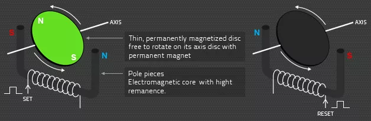
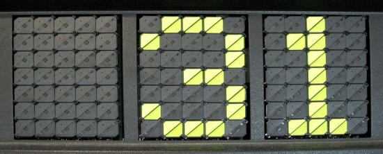

Construída em 2008, a seção surgiu para melhorar a manuteção dos painéis que começaram a equipar os ônibus novos, em substituição aos antigos letreiros de lona, iluminados por lâmpadas incandecentes ou fluorescentes. No início foram os painés de "DOTs" uma tecnologia que fazia pequenas plaquetas pintadas de cor fluorescente e que se moviam afim de formar as letras de acordo com as palavras, até que chegaram os inovadores itinerários de LED (Diodo Emisor de Luz) capazes de melhorar a visibilidade das palavras e permitir novas cores com mais resolução e nitidez. Hoje já conseguimos fazer desenhos e reproduzir uma animação ou um filme, pois os leds individuais foram encapsulados em módulos RGB, permitindo reproduzir cores diversas e efeitos mais dinâmicos, tudo isto para informar melhor ao passageiro ou outras mensagens, já que os mesmos podem ser construidos em diversos tamanhos e aplicados em vários tipos de estabelecimentos.
Conhecendo algumas tecnologias
Flip-disc ou Dots:
Armazenamento magnético ou gravação magnética é o armazenamento de dados em um meio magnetizado. O armazenamento magnético utiliza diferentes padrões de magnetização em um material magnetizável para armazenar dados e é uma forma de memória não volátil. A informação é acessada usando um ou mais cabeçotes de leitura/gravação.

O conjunto do disco articulado inclui um ímã permanente. O disco giratório selecionado muda de posição de acordo com a mudança controlada no campo magnético de uma bobina eletromagnética intimamente acoplada. O sinal de controle simplesmente inverte a direção do pulso de corrente através da bobina que inverte o campo magnético da bobina. O ímã permanente localizado no conjunto do disco é atraído ou repelido pelo campo produzido na bobina. O flip disc permanece na posição para a qual foi girado pela última vez até que o campo da bobina seja revertido por outro pulso de corrente.

LED o Diodo Emissor de Luz.
A tecnologia de LEDs, se dividem inicialmente em SMD ou DIP. Mas você sabe exatamente qual é qual e principalmente, quais as diferenças entre eles? Esperamos poder ajudar e esclarecer de forma simples cada uma de suas peculiaridades.
DIP (Duel In-Line Package)
Os LEDs DIP são os LEDs mais tradicionais do mercado. Eles contêm dois pinos de conexão que são encapsulados para PCBs (placas de circuito impresso). Os LEDs DIP foram mais amplamente fabricados antes do século 21. Possuem CRI inferior e menor eficácia do que os LEDs SMD mais recentes. No entanto, muitos DIPs ainda são usados hoje em muitas aplicações.
SMD (Surface Mount Device/Diode)
Os LEDs SMD são uma tecnologia mais recente, resiliente, eficiente e duradoura para produção em massa. Eles permitem uma produção de grande quantidade com mais eficiência, por sua praticidade na aplicação dos componentes além de que um LED SMD substitui três LEDs DIP.